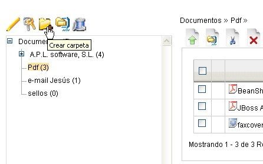
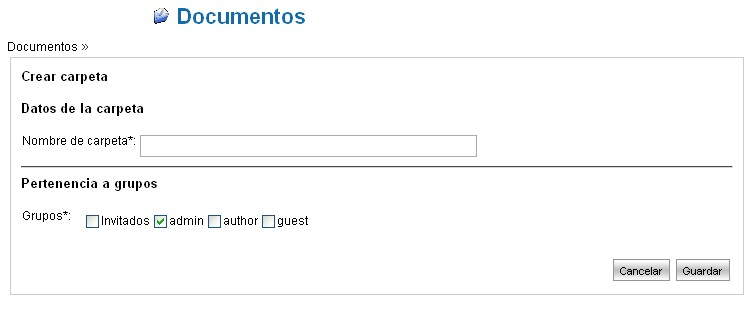

Añadir una Carpeta |
LogicalDOC permite organizar los documentos en carpetas.
La idea de base es similar a como está organizado un disco
local.
Una carpeta puede contener documentos y sub-carpetas. Al visualizar la
carpeta, se muestran todos sus documentos.
Haciendo click en el nombre de una sub-carpeta, ésta se
expande y en la parte derecha se visualizan los documentos que contiene.
Para añadir una carpeta nueva, debe acceder primero a la
sección Documentos usando, para ello, el menú
principal.
Siga a continuación las acciones indicadas:
- Seleccionar en el árbol de carpetas la considerada carpeta "padre"; la carpeta seleccionada pasará a verse en negro.
- Haga click sobre el icono "Crear carpeta" colocado en la parte superior del árbol de carpetas.

- Definir el nombre de la carpeta y del grupo de
pertenencia.
Conviene prestar mucha atención a la asignación del grupo de pertenencia, pues solamente los usuarios que pertenezcan al grupo tendrán visibilidad de la carpeta; los usuarios de otros grupos no la verán ni podrán acceder a aquella carpeta en que no tengan el permiso de lectura.
Como ejemplo, en la imagen siguiente solamente los usuarios del grupo "periodistas" tendrán visibilidad y conocimiento de la existencia de la nueva carpeta y de los documentos en ella contenidos.
